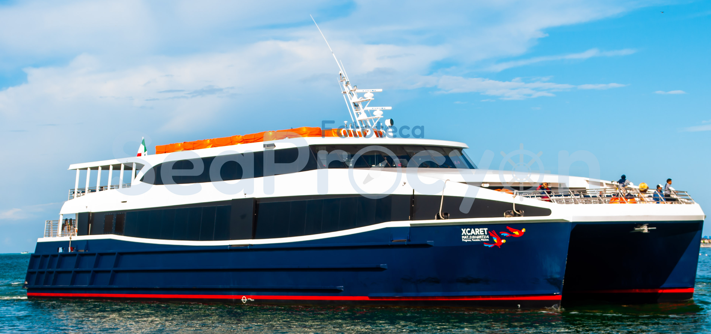
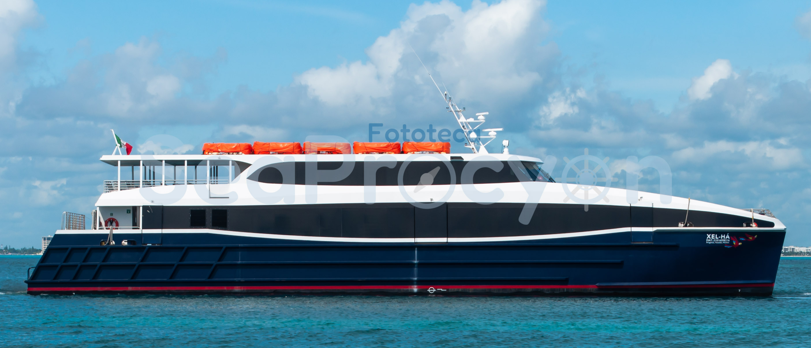
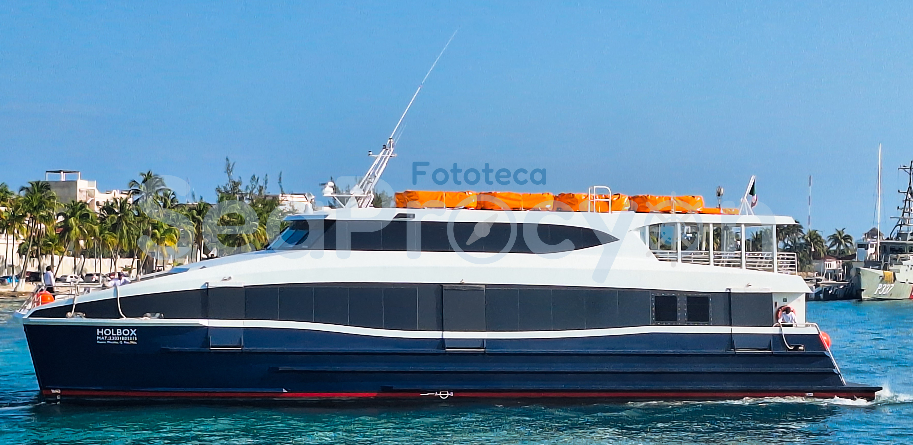
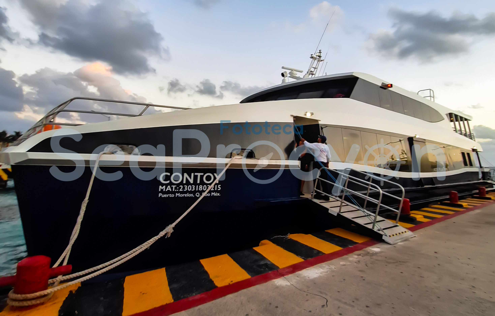
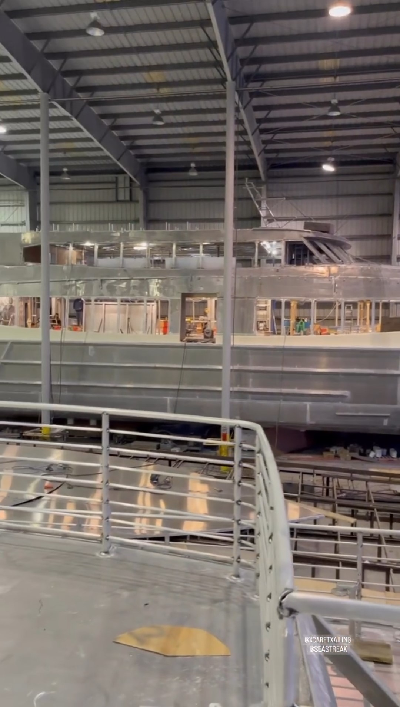
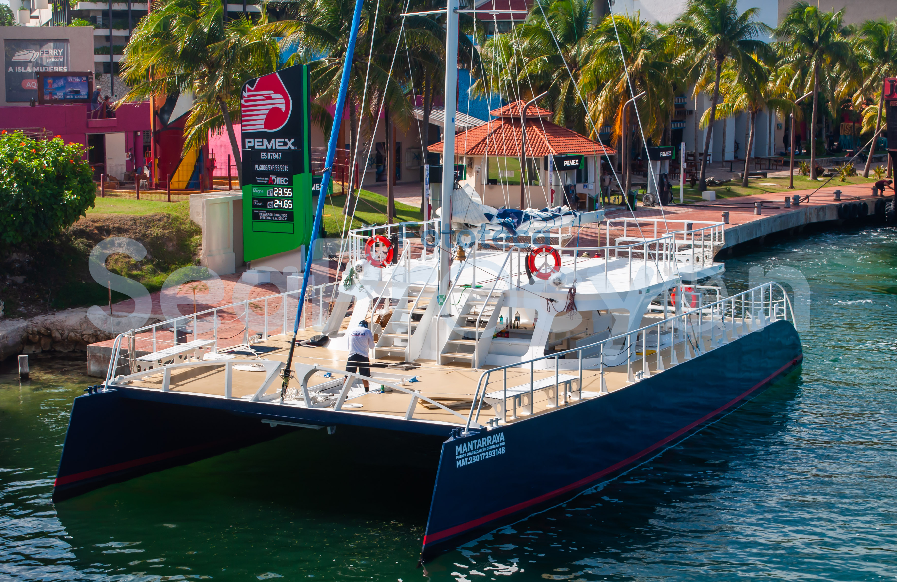

Xcaret Xailing es la naviera más reciente, por lo cual empezó operaciones el 27 de diciembre del 2021 en la ruta de “El embarcadero Cancún” a Isla Mujeres, con los primeros barcos Xcaret y Xel-Ha Construidas por Midship Marine Inc.
En 2023 se construyeron y se recibió dos barcos “Contoy” y “Holbox” por Midship Marine Inc..
2021 al Presente
| Foto | Nombre del barco | Clase | No. de Matricula | IMO | Puerto de Registro | Astillero | Año de Construcción | Otros nombres | Estado de la Embarcacion | Ilustración | Observaciones |
|---|---|---|---|---|---|---|---|---|---|---|---|
|  | Xcaret | -- | 3101609721-4 | 9890068 | Progreso, Yucatán | Midship Marine inc. | 2021 | -- | Activo | Si | Construido por Midship Marine Inc. en Harvey, Louisiana |
|  | Xel-Ha | -- | 3101609821-6 | 9890070 | Progreso, Yucatán | Midship Marine inc. | 2021 | -- | Activo | Si | Construido por Midship Marine Inc. en Harvey, Louisiana |
|  | Holbox | -- | 2303180221-5 | 9952048 | Puerto Morelos, Quintana Roo | Midship Marine inc. | 2023 | -- | Activo | En proceso | Construido por Midship Marine Inc. en Harvey, Louisiana |
|  | Contoy | -- | 2303180321-5 | 9952050 | Puerto Morelos, Quintana Roo | Midship Marine inc. | 2023 | -- | Activo | En Proceso | Construido por Midship Marine Inc. en Harvey, Louisiana |
|  | Cancun | -- | --- | 9952062 | ---- | Midship Marine inc. | 2023/2024 | -- | En construcción | En Proceso | Midship Marine en Instagram ha compatido varias historias durante su construcción, no se sabe aun que buque |
| Cozumel | -- | --- | 9952294 | ---- | Midship Marine inc. | 2023/2024 | -- | En construcción | En Proceso | Midship Marine en Instagram ha compatido varias historias durante su construcción, no se sabe aun que buque | |
|  | Mantarraya | -- | 2301729314-8 | --- | Puerto Juárez, Quinta Roo | --- | --- | -- | --- | --- | Velero usado para tours |